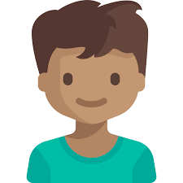

You See Events
ー An Android app for students to discover and promote events
 Course: CSE 110 ー Software Engineering @ UCSD
Course: CSE 110 ー Software Engineering @ UCSD Timeline: April - May 2019 (8 weeks)
Scope: Android development, Agile development
Teammates: Adam Loop, Adrian Mendoza, Andrew Muro, Darrell Tan, Dhruv Duggal, Edward Yoon, Kevin Chan, Shri Jalsingh & Tai White
Project Overview
In a Software Engineering course at UCSD, I worked with 9 other computer science students to develop an app while working under an agile development framework. The prompt for the project was open ended: create any kind of app that targeted a user base with a specific need. Each week we created and presented artifacts to guide our development and gain continuous feedback from our peers and instructors.
Background
Our brainstorming began with thinking about what apps we would want in our daily lives as students. One idea we were drawn to was a way to discover events on campus, especially when thinking about how our school is labelled as “socially dead”.
Even though there were existing platforms for event sharing, there was no organized or uniform system to easily find or publicize events on campus. With the amount of social media posts created by all the different organizations on campus, students might never see advertisements for events they actually might be interested in.
Students need a way to easily discover campus events that relate to their interests, and event organizers need a platform to publicize their events to larger groups of people.
Competitive Audit
The main inspiration for our app came from viewing the student events website for UCSD, but we also surveyed other platforms to determine what features contributed to good and bad event marketing.
These platforms include UCSD's variety of Facebook groups and email newsletters.
UCSD’s current event website

| Pros | Cons |
|---|---|
|
|
| Pros | Cons |
|---|---|
|
|
Emails

| Pros | Cons |
|---|---|
|
|
After reflecting on the different methods of event marketing, we decided to focus on what each platform did successfully and what each platform could improve upon. Our app was very driven by the idea of being able to search and filter events easily through a singular platform.
Needfinding
After researching the available resources to find and promote events, we compiled the different needs a student and event organizer may have while using our app. We did this by creating an user stories, a tool of agile development used to help developers imagine and understand the perspective of their user base.
These user stories explain requirements of the app and highlight what user needs correlate to it. The artifact can be seen in the pdf below.
Student users would want to:
- Save and view data about events they are interested in
- Search events so if they hear about an event, they can find more details
- View popular events in order to know if they should anticipate a large crowd or wait time
- Filter and search events by tag to discover events they are interested in
Event organizers would want to:
- Add their events to the app so they are visible to a wide audience
- Be able to edit details easily in case date/time/location changes
- Tag their events so they can be discovered easily
User Personas

Jay is a fourth year student at UCSD. He is currently a board member of an engineering student org and wants to promote their first GBM of the quarter. He’s posted on Facebook groups and handed out flyers in person, but he wishes there was a better way to reach students that would be interested in joining a club.
 Ann is a first year student at UCSD. She and her roommates want to attend a Welcome Week event that their RA told them to check out, but can’t remember the name or location of it. She and her roommates wish there was an easier way to find all these cool events her RA had told them about.
Ann is a first year student at UCSD. She and her roommates want to attend a Welcome Week event that their RA told them to check out, but can’t remember the name or location of it. She and her roommates wish there was an easier way to find all these cool events her RA had told them about.
Use Case Diagram
We constructed a use case diagram in order to specify the requirements of our app, show its functionality, and to show how our stakeholders will interact with these requirements.
The use cases are meant to define the functionalities we want to be available in our app; we created these before development in order to ensure proper workflow and guide our focus.

Screen Sequence Diagrams
We used screen sequence diagrams to show the interaction between objects in the system; the diagrams are used to guide development by showing how the system should function for a given interaction.
These diagrams show how interaction will begin from front end (the Android XML file), and then respond accordingly with the use of Java controller classes. It also shows when items are parsed to our database for certain interactions. Most often these interactions involve submitting forms; one example of this would be registering account data.
Database Schema
In addition to our sequence diagrams, we created a database schema to define the entire database we needed to create in order to develop our app. A user database consists of variables such as id, password, account type flag, and their array of saved events. The event database is constructed of all the components used to publish an event object.
Design Iterations
Initial Homepage Design vs Final Design
In our team, I took on the role as the user interface specialist. Being my first time working with mobile development, I created the initial design to develop the overall look and feel of our app. I presented this initial design to our instructor and peers, and received feedback on how the design could be improved upon in order to promote usability. These improvements can be seen above, such as adding labels to the bottom navigation.
After learning more about the tools in Android’s XML design, my team and I reiterated on this design to make developing easier, as it was the first time most of us were using Android Studio. We made these changes under a SCRUM development process, making adjustments to the design after certain features could not be implemented in the way we imagined. This can be seen with the search feature being transferred to its own page rather than being a working feature of the homepage.
Sample Screens
This is the final version of our app’s sample screens, created in Figma. It demonstrates the workflow of a student using the app and an event organizer using the app. A student user has the ability to view, search, and save events. An organizer is primarily used to create and publish events to the app as well as edit the details of their events.
Test Cases
As part of quality assurance, we created both test cases and user acceptance tests; these cases are meant to test functionality and to ensure that user goals and needs are accounted for.
Test cases were used to ensure our final product met the system requirements we established at the beginning of our project. Test cases are used to identify the workflow of the system, particularly the back end, in order to achieve a user goal.
User acceptance tests are black box system tests used to address the implementation of user needs. These tests ensure that users are able to achieve an expected result through front end interaction only, such as pressing buttons.
By creating and performing these tests, we were able to guarantee that our app had all components required to carry out established tasks.
Final Product
View our GitHub here!
By the end of the course, we were able to present a functioning Android app that utilized web scraping and Firebase to store data of events and simulate different user accounts. Users could register and log in to accounts, change their password, and have accurately saved data. Student accounts could view and save events, and organizer accounts were able to publish events to the app. However, due to limitations of both time and data storage, we were unable to develop our app to its fully planned extent.
As seen, the final version of our app does not display all necessary data points in the homepage -- due to restrictions from Firebase storage. In addition, some parts of our interface, such as event details, have very minimal styling due to our team having to prioritize development over learning about Android layout elements.
Reflection
This was my first time developing such a large scale app in a team. This project taught me a lot about project management and gave me better
insight on how it is to work under an agile development framework. If I were to revisit this project, I think I would definitely commit more time
to learning and understanding XML files and Android layout development; I would want to learn how to better design an interface that would be
able to adapt to the Java controller classes my team had been implementing.
Overall, this project was such a great learning experience, and it could not have been done without the hard work of my teammates and the helpful feedback of our CSE 110 instructors. :)